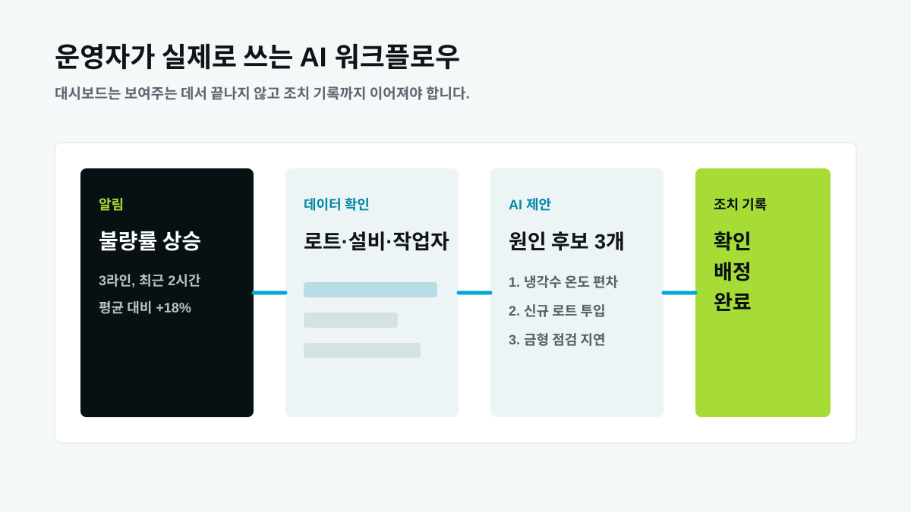
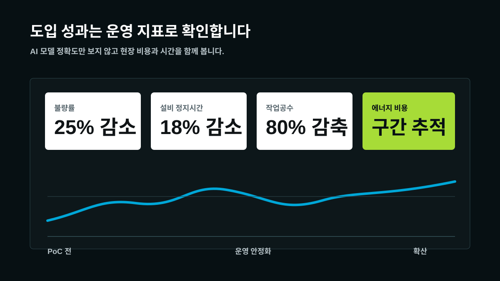

컨포트랩 AI 품질관리·예지보전 플레이북: 제조 AI 운영 가이드
AI 품질관리와 설비 예지보전은 제조 현장에서 가장 많이 검색되는 제조 AI 주제입니다. 하지만 실제 도입이 어려운 이유는 모델이 부족해서가 아니라, 불량과 설비 정지를 설명하는 데이터가 흩어져 있고 조치 기록이 다시 학습 데이터로 돌아오지 않기 때문입니다.
AI 품질관리는 검사 자동화보다 넓습니다
검사 이미지를 AI로 판정하거나 불량 여부를 자동 분류하는 일은 중요합니다. 그러나 제조 현장의 구매 책임자와 공장장이 진짜 보고 싶은 것은 “왜 반복되는가”와 “다음에는 무엇을 바꿔야 하는가”입니다. 불량 판정 결과만 쌓이면 품질 회의는 여전히 길어집니다. 검사 결과가 설비 온도, 전류, 압력, 작업 조건, 원재료 로트, 작업자 입력과 연결돼야 원인 후보를 좁힐 수 있습니다.
국내 제조 AI 레퍼런스도 이 방향으로 움직입니다. 포스코DX는 산업 현장에 특화한 피지컬 AI와 설비 데이터 활용을 강조하고, CJ올리브네트웍스는 스마트 제조와 AI·빅데이터를 운영 혁신의 한 축으로 제시합니다. LG CNS는 Factova Control에서 서로 다른 설비 데이터를 표준화하고 모터 전류, 온도, 진동 같은 실시간 신호로 이상 징후를 감지하는 방향을 소개했습니다. 미라콤아이앤씨는 MES 위에 자연어 기반 제조 분석을 더하는 흐름을 제시했고, 울랄라랩도 에너지와 설비 데이터 기반 예지정비 사례를 전면에 내세웁니다. 로크웰 오토메이션의 산업용 DataOps 자료 역시 IT·OT 데이터를 하나의 근거로 만들려는 방향입니다. 엠아이큐브솔루션 같은 제조 IT 기업도 MES와 제조 AI를 분리하지 않고 제조 지능화 흐름으로 묶습니다. 컨포트랩은 이 흐름을 중소·중견 제조 현장에서 실행 가능한 운영 단위로 낮추는 데 집중합니다.

예지보전은 고장 예측보다 정비 우선순위에 가깝습니다
예지보전이라는 단어 때문에 많은 팀이 처음부터 고장 시점을 정확히 맞히는 모델을 상상합니다. 하지만 초기 도입에서 더 중요한 것은 정비 우선순위입니다. 어떤 설비를 먼저 볼지, 어떤 부품을 준비할지, 어떤 알람 조합을 위험 신호로 볼지 정하는 것만으로도 현장의 대응 시간은 줄어듭니다.
이를 위해서는 정비 이력과 설비 알람이 반드시 함께 있어야 합니다. 온도, 진동, 전류 같은 센서값만으로는 “문제가 있었다”는 사실은 보이지만, 실제 정비 조치와 비용 영향을 설명하기 어렵습니다. 반대로 정비 기록만 있고 설비 상태 신호가 없으면 다음 이상을 조기에 잡기 어렵습니다. 컨포트랩은 반복 정지 설비부터 신호와 이력을 묶고, 운영자가 바로 확인할 수 있는 위험 점수와 조치 항목으로 변환하는 접근을 권합니다.

처음부터 전 공장 AI를 목표로 잡지 마세요
제조 AI 프로젝트가 무거워지는 이유는 범위가 너무 넓기 때문입니다. “전 공장 데이터를 모두 모아 AI를 만들자”는 목표는 매력적이지만, 실제로는 태그 정리와 기준정보 통합에서 시간이 오래 걸립니다. 첫 프로젝트는 공정 하나, 설비 두세 대, 품질 문제 하나로 좁혀야 합니다. 컨포트랩이 추천하는 첫 질문은 다음과 같습니다.
- 최근 30일 동안 반복된 불량 유형은 무엇인가요?
- 불량이 발생한 시간대에 함께 움직인 설비 신호는 무엇인가요?
- 정비 이력과 설비 알람 사이에 반복 패턴이 있나요?
- 운영자가 조치 후 남기는 기록은 다음 분석에 다시 들어가나요?
이 질문에 답하면 AI 모델보다 먼저 필요한 데이터 구조가 보입니다. 품질 담당자는 검사 결과와 원인 후보를, 설비 담당자는 정지 위험과 점검 우선순위를, 생산 담당자는 라인별 생산성 변화를 같은 화면에서 확인해야 합니다.
제조 AI 에이전트는 보고서가 아니라 조치를 줄여야 합니다
제조 AI 에이전트의 가치는 멋진 답변 문장이 아닙니다. 운영자가 매일 하는 확인, 정리, 보고, 배정 업무를 줄이는 데 있습니다. 예를 들어 불량률이 급상승하면 AI 에이전트는 관련 작업지시, 로트, 설비 알람, 검사 결과를 모아 원인 후보를 제시하고, 담당자에게 확인 항목을 넘겨야 합니다. 조치가 끝나면 결과를 기록해 다음 분석의 학습 데이터가 되도록 해야 합니다.

성과 지표는 AI 정확도보다 운영 비용에 둡니다
AI 품질관리 프로젝트의 성공 지표를 모델 정확도 하나로 잡으면 현장 설득이 어렵습니다. 의사결정권자에게는 불량률, 정지시간, 작업공수, 에너지 비용, 보고서 작성 시간이 더 직접적인 언어입니다. 따라서 PoC 설계 단계에서 기준선을 정해야 합니다. 지난 3개월 평균 불량률, 반복 정지 건수, 품질 회의 준비 시간, 설비 점검 리드타임 같은 지표를 잡고 도입 후 변화를 추적합니다.
컨포트랩의 메시지는 단순합니다. AI는 현장을 더 바쁘게 만드는 장식이 아니라, 운영자가 같은 데이터를 다시 찾는 시간을 줄이는 도구여야 합니다. 품질 이상을 빠르게 설명하고, 설비 정지를 먼저 의심하고, 에너지 낭비 구간을 보여주며, 조치 기록을 남겨 다음 판단의 근거로 만드는 것이 제조 AI 운영의 본질입니다.

자주 묻는 질문
AI 품질관리는 검사 자동화와 같은 뜻인가요?
아닙니다. 검사 자동화는 AI 품질관리의 일부일 수 있지만, 컨포트랩이 말하는 AI 품질관리는 검사 결과와 설비 신호, 작업 조건, 조치 기록을 연결해 원인과 다음 행동을 찾는 운영 흐름입니다.
예지보전을 시작하려면 어떤 데이터가 필요한가요?
정비 이력, 설비 알람, 전류, 온도, 진동, 정지 로그처럼 고장 전후의 상태를 설명할 수 있는 데이터가 필요합니다. 데이터가 부족하면 반복 정지 설비 한두 대부터 시작하는 것이 좋습니다.
컨포트랩은 품질 이력, 설비 신호, 조치 기록을 연결해 제조 AI가 실제 운영 지표를 바꾸도록 설계합니다.
도입 문의